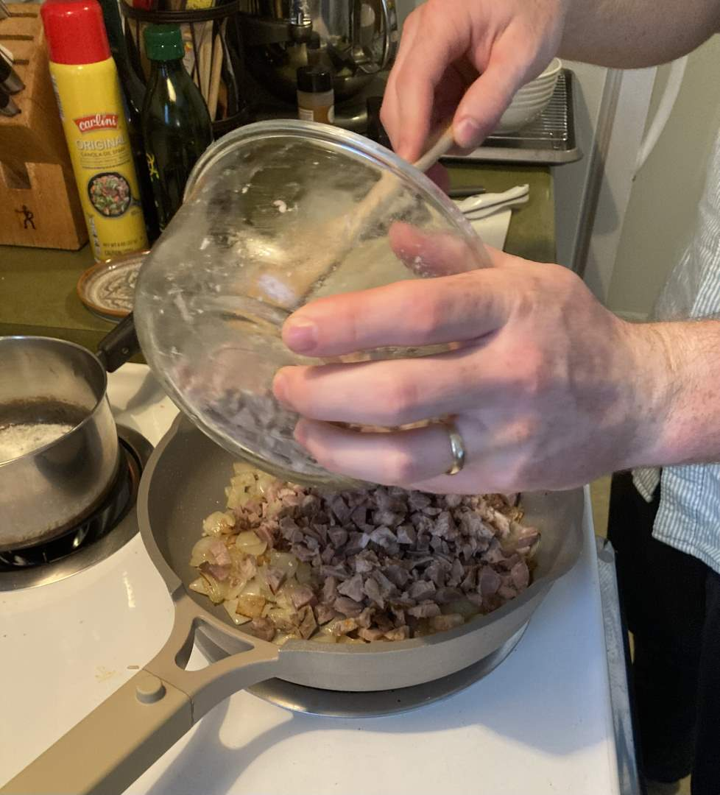
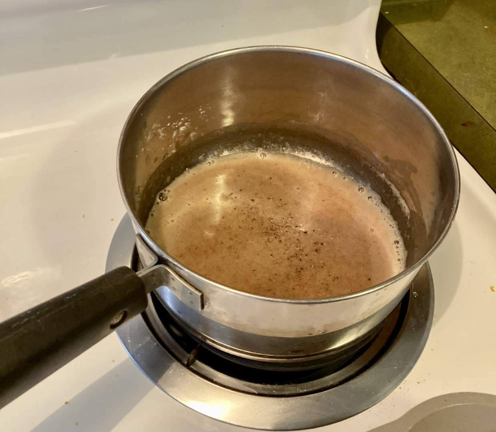
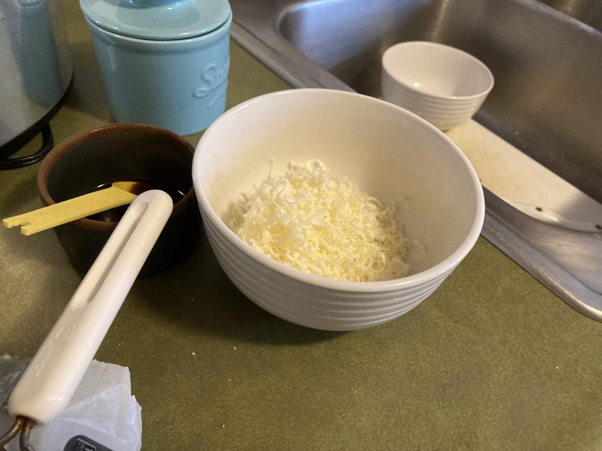
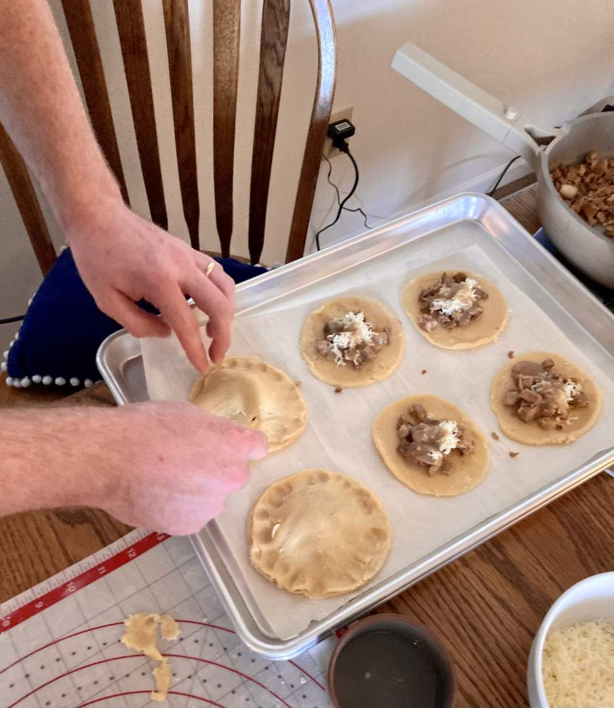
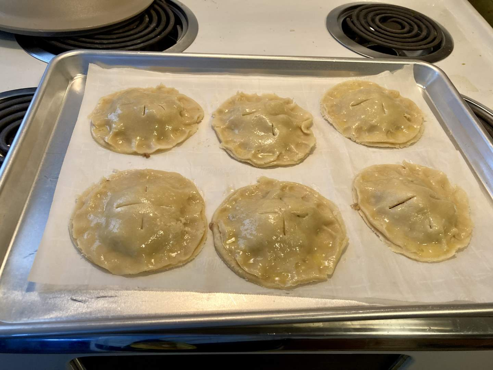
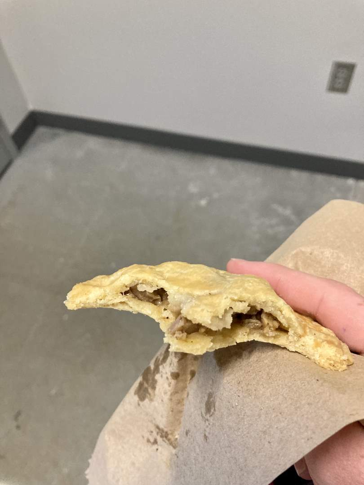

Pie 8: Pork and Onion Hand Pie
2023-08-16Filling recipe from AwesomeOn20.
Crust recipe from Creative Culinary.
Taste:
Difficulty:
Vibes:
Suggested pairings: pumpkin-zucchini bread, salad
This post breaks new ground for Pie-A-Week in at least four ways: the pie is meaty, we made single-serving pies, this post has a comment section (which will stick around if it doesn’t cause us problems), and we are in our new apartment this week!
Katie Beth and I moved into an apartment near the MU campus in Columbia last week. We’ve tremendously enjoyed being settled together, even as we are still unpacking and moving furniture around. Being able to cook together in our own kitchen has been a delight. For the first pie recipe here, we decided to make pork and onion hand pies. It’s a classic English dish, one with a cultural status that some have compared to the apple pie in America. I’ve actually never had one, so it seemed like a good thing to try.
I had a pound of cooked pork roast in the fridge from a previous cooking episode that I sauteed together with a chopped onion and a sort of ersatz Worcestershire sauce substitute. Lacking any pork drippings, I made gravy from butter, flour, and vegetable stock. It tasted shockingly like real meat gravy for a vegetarian substitute, which I attribute to browning the butter.
The crust was made with a mix of butter and shortening and five cups of flour! It took two four-inch-diameter crust discs to produce each of roughly 20 pies, or about 500 sq. in. total. (Roughly four times the area of a single 12-inch crust.)
A spoonful of pork filling, a spoonful of gravy, a pinch of cheese, then smoosh on the top crust and brush with egg.
 They were delicious! We have been eating the pies for most meals since baking them. It was a ton of work since each serving had to be made individually, but they are good to eat again and again.
